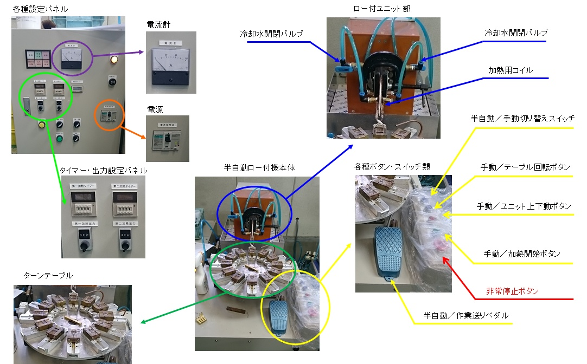

③ロウ付け作業
高周波ロウ付け機 各部名称

実際の作業手順
実際にロウ付け作業をする場合の手順は、
- 用意されたジョイントにフラックスを付け、ロウ材（リングロウと言います）とヘッダー本体を組み合わせてロウ付け機械のターンテーブルにセットします。
- 部材をターンテーブルにセットしたら、機械右手側にある半自動/作業送りペダルを押すと、部材を熱する為の"加熱コイル"が下がり、セットした部材の加熱が開始します。
- 設定された秒数(１０秒～２０秒ほど)経過するとリングロウが溶けて、部材同士が接合されます。
- ロウ付け後の製品は高温になるため、必ずペンチやピンセットを使用して取り出し、指定のカゴに移して行きます。
ロウ付け作業中に気をつける事
作業中に気をつける点としては、フラックス濃度と、部品の組み合わせを確実にする事などです。
- フラックスは水に溶かして使用する為、濃度が薄すぎor濃すぎてもキレイにロウ付けされません。
ロウ付け作業中はある程度の濃度を確保しながら作業を行える様になって頂けるようお願いします。
（当然慣れない内は責任者が確認します） - 部品の組み合わせは本体にジョイントがしっかり収まった状態でロウ付けをしないと不良品となってしまうので、注意しながら作業しましょう。
製品の品質
製品の不具合について
ロウ付け作業は機械を使用していますが、不具合品が出てしまう事も多々あります。
一例を紹介しますのでこのような不具合品が出てしまう事も意識しながら作業を行いましょう。
- ジョイント部にキズや打痕がある物
- ロウ付け部分が切れている、またピンホールがある物(ロウ付けがしっかり出来ていない)
- ジョイント部が大きく曲がっている
- 本体またはジョイント部が溶けてしまっている
工程検査について
不具合品を０にするのはかなり難しい問題です。
その為、出荷前に社内で不具合品を発見し、市場に出ていかないように"工程検査"を行っています。
こちらでは以下の工程検査を行っています。
・外観検査(キズ、曲がり、溶け、ロウ切れ等の発見)
・突き、通気検査(お湯が流れる事の確認)
・気密検査(お湯が漏れない事の確認)
どれも重要な検査となります。
特にお湯が流れない、お湯が漏れる、これを発見出来ずに出荷してしまうと、床が温まらなかったり、ご家庭の床下が水浸しになってしったりします。
またお湯を流すパイプは樹脂パイプの為、ジョイント部にキズや打痕がある状態でパイプを取り付けてしまうと、パイプ自体を傷つけてしまい、これも水漏れの原因になってしまいますので、製品の取り扱いには十分注意して作業を行って頂きたいと思います。
※これらの不具合品が市場へと流出してしまうと、会社で不具合品の回収や、修理などを行うため、重大な損失となってしまいます。